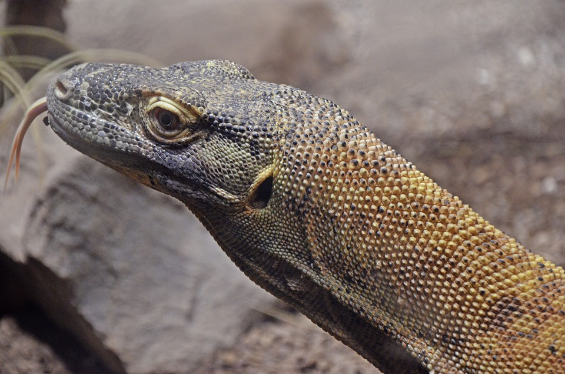

The Healthy Circle
The Healthy Circle
Login
Sign up
☰
Antimicrobial substances identified in Komodo dragon blood
The world's largest lizard, Komodo dragons live on five small islands in Indonesia. The saliva of these creatures contains at least 57 species of bacteria, which are believed to contribute to the demise of their prey. Yet, the Komodo dragon appears resistant to these bacteria, and serum from these animals has been shown to have antibacterial activity. Substances known as cationic antimicrobial peptides (CAMPs) are produced by nearly all living creatures and are an essential part of the innate immune system. So, Barney Bishop, Monique van Hoek and colleagues at the College of Science at George Mason University wondered whether they could isolate CAMPs from Komodo dragon blood, as they previously had done with alligator blood to expand the library of known CAMPs for therapeutic studies.
The team used an approach known as bioprospecting. They incubated Komodo dragon blood with negatively charged hydrogel particles that they developed to capture the peptides, which are positively charged. With this method, they identified and sequenced 48 potential CAMPs with mass spectrometry. All but one of these was derived from histone proteins, which are known to have antimicrobial activities. Eight were synthesized and tested against Pseudomonas aeruginosa and Staphylococcus aureus. Seven of the peptides showed significant potency against both bacteria. The eighth was only effective against P. aeruginosa. The researchers conclude that Komodo dragon blood plasma contains a host of potentially viable antimicrobial peptides that could help lead to new therapeutics.
Story Source:
Materials provided by American Chemical Society.
Note: Content may be edited for style and length.